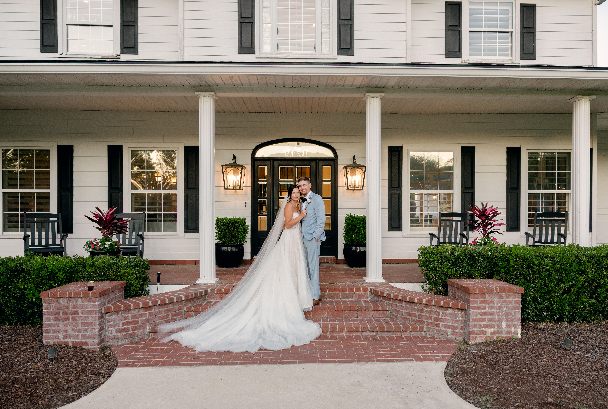
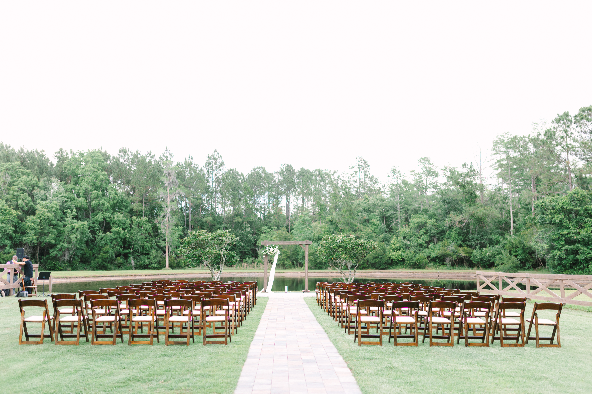
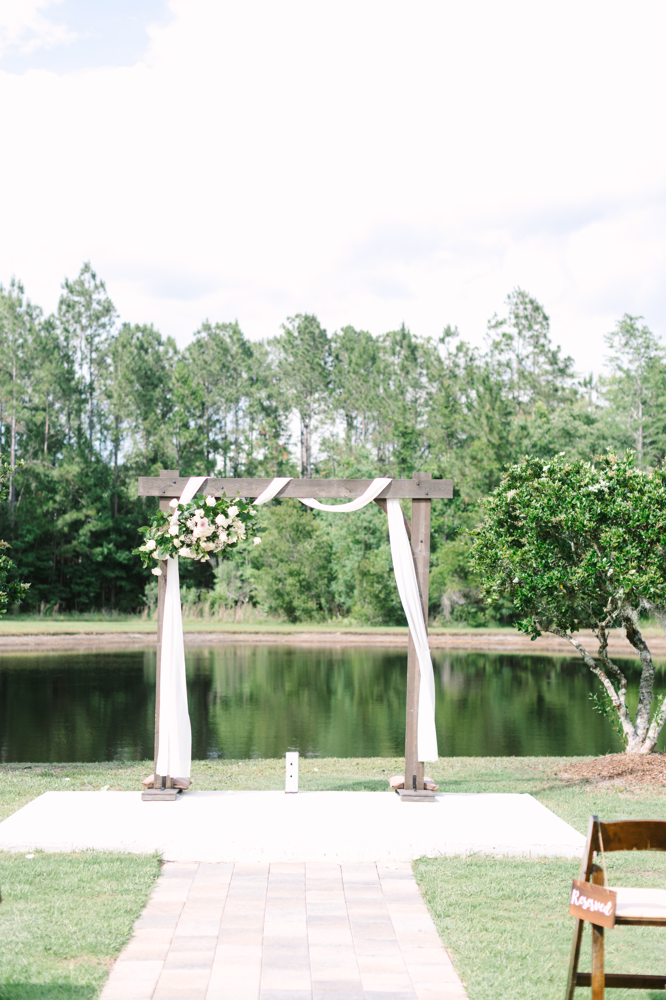
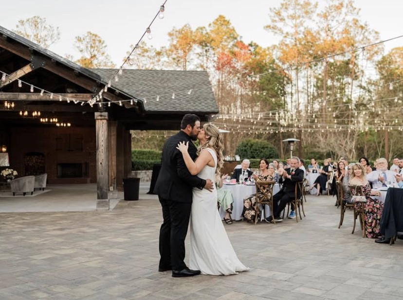
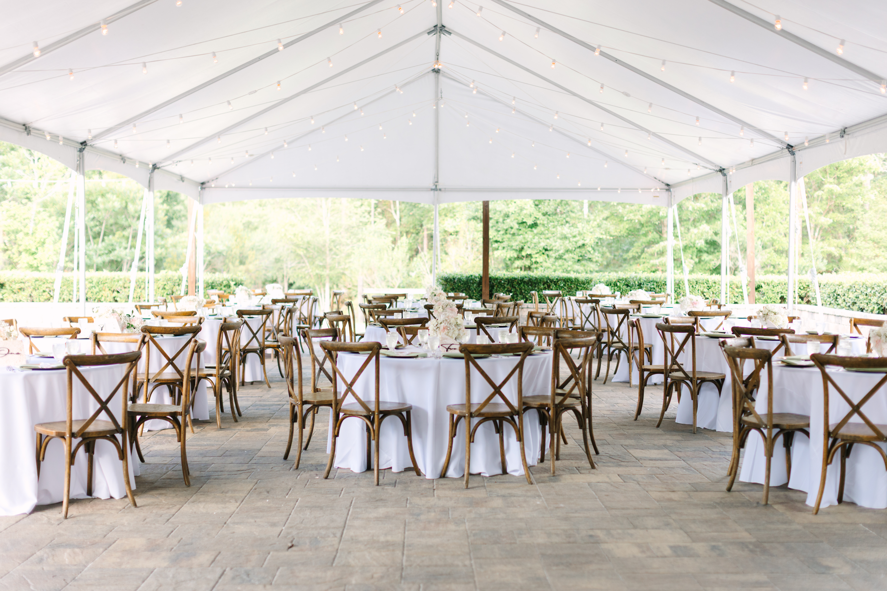
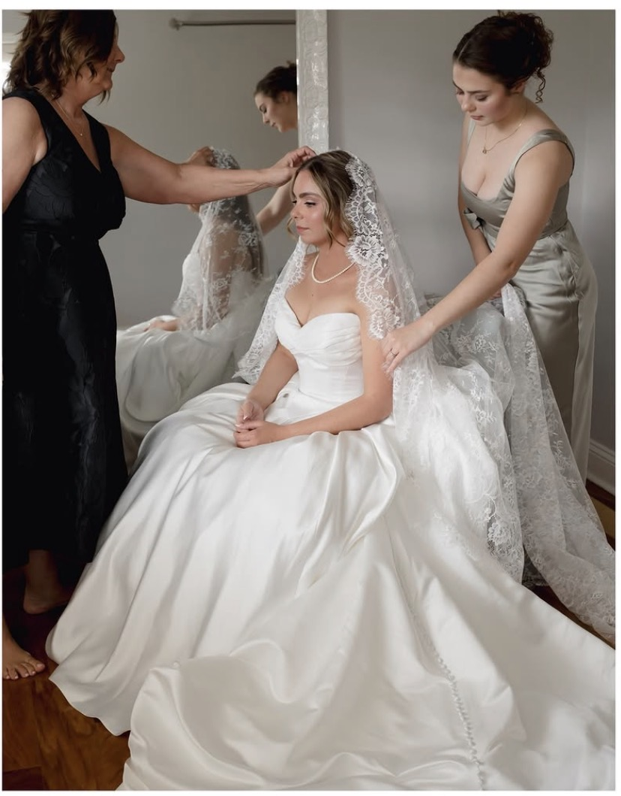
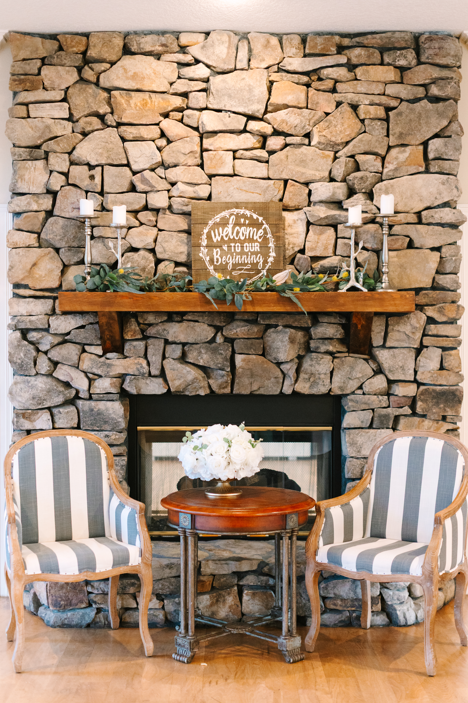
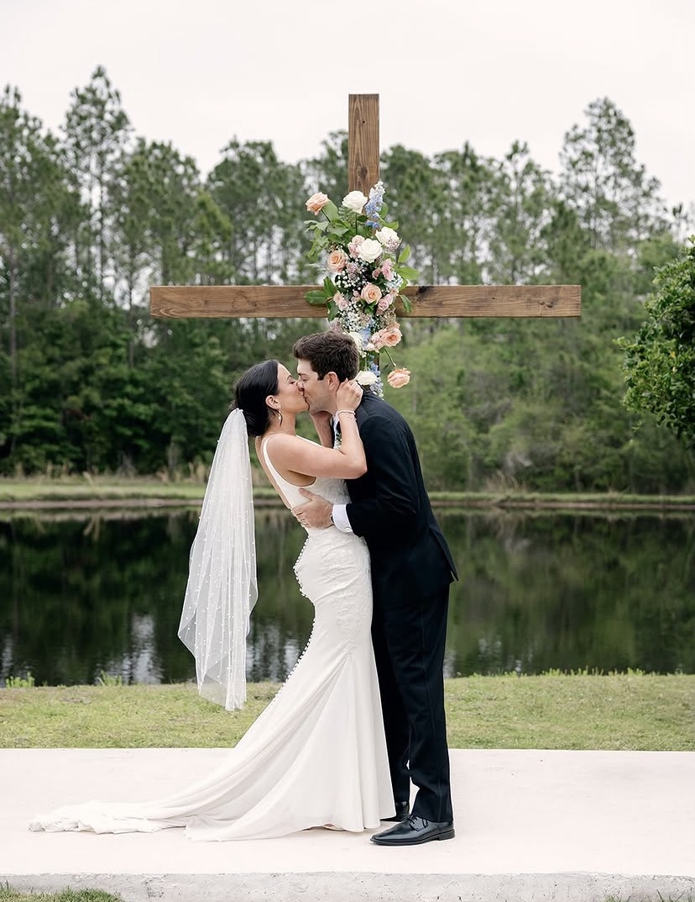
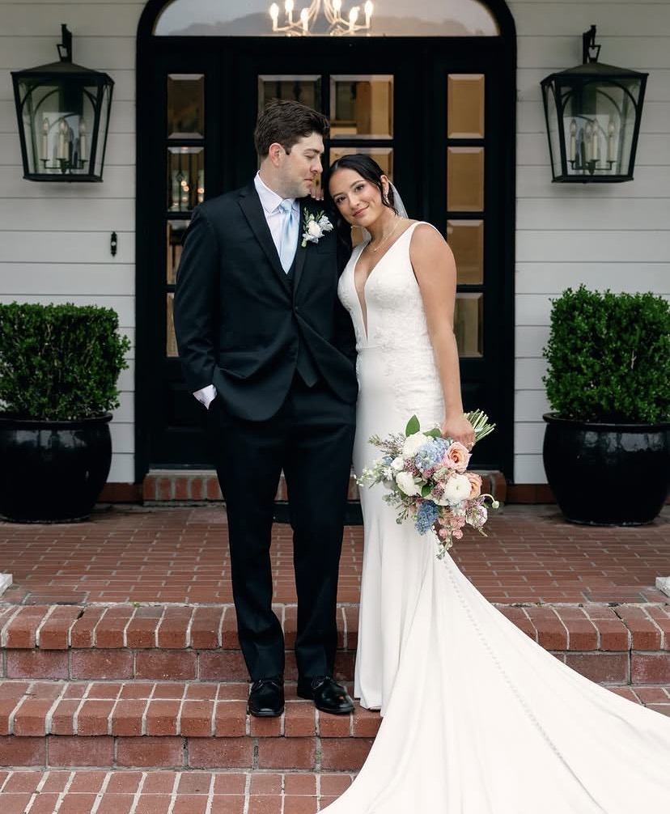
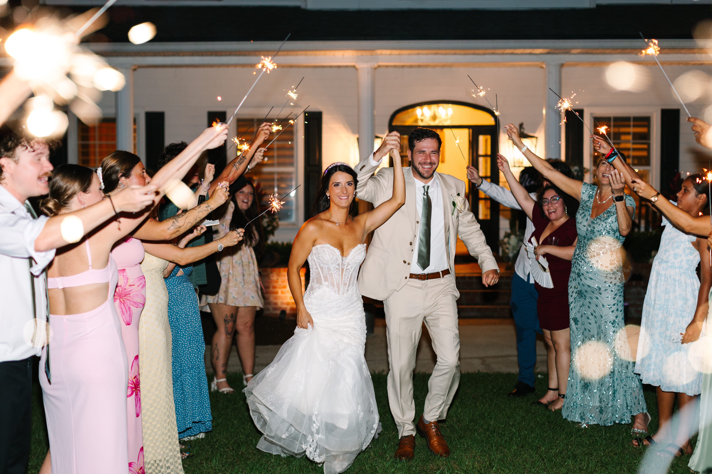

42 acres of private woodland, a dramatic oak canopy ceremony site, and a tented Terrace that holds 300 — here's what to know before booking your wedding at The Manor at 12 Oaks.
The Manor at 12 Oaks is a private estate wedding venue set on 42 acres of woodland property in Green Cove Springs, FL — roughly 30 minutes southwest of downtown Jacksonville in Clay County. The property was purpose-built for weddings, and the range of ceremony and reception spaces it offers — five distinct areas across the estate grounds — makes it one of the more versatile venues in the Jacksonville metro area for couples who want a private, nature-immersed setting without compromising on event infrastructure.
Footloose Entertainment is on The Manor at 12 Oaks’ preferred vendor list and provides wedding entertainment there regularly. We know the property layout, load-in logistics, and how the various ceremony-to-reception transitions work across the estate’s different spaces.

The Manor at 12 Oaks offers five ceremony and reception areas across its 42-acre estate:
| Space | Use | Capacity |
|---|---|---|
| Lakeside Ceremony Space | Outdoor ceremony | Up to 300 |
| Under the Oaks | Outdoor ceremony (front lawn) | Intimate to mid-size |
| The Pavilion | Ceremony or reception core | Up to 110 seated |
| The Terrace | Primary reception (tented) | Up to 300 |
| The Ballroom | Indoor ceremony or reception | 140 ceremony / 80 reception with dance floor |
| Foyer & Gathering Room | Cocktail hour, overflow | River rock fireplace, 10-ft ceilings |
The Lakeside Ceremony Space is the largest outdoor area and the most popular ceremony setting — it connects to the Manor house via a striking walkway, and antique ceremony doors create a dramatic entrance. The Terrace, covered by string lights and a weather-protection tent, is the primary reception area. The Ballroom is the fully indoor option with 10-foot ceilings and sliding doors that open to the stone Terrace.
Separate bridal and groom suites — the Wedding Party Suite and the Wedding Party Lodge (in a carriage house with game room and bar) — give both sides of the wedding party private, well-appointed preparation spaces.


Most Manor at 12 Oaks weddings run in one of two configurations: Lakeside Ceremony into Terrace Reception, or Pavilion Ceremony into Terrace Reception. The Lakeside Ceremony accommodates up to 300 guests on the manicured estate lawn with antique ceremony doors framing the entrance. After the ceremony, guests move to the Foyer and Gathering Room for cocktail hour while the Terrace is finalized for dinner and dancing.
For smaller or more intimate weddings, the Under the Oaks ceremony — beneath two ancient oaks on the front lawn — works beautifully for guest counts under 150. The Ballroom is the fully weatherproof option, used for ceremonies of up to 140 or receptions of up to 80 with a dance floor.

Footloose Entertainment is on The Manor at 12 Oaks’ preferred vendor list and has provided wedding entertainment there regularly. We know the load-in sequence across the estate’s different spaces, power access at the Terrace and Ballroom, and how the ceremony-to-reception transitions run with the Manor’s event staff.
Outdoor ceremony spaces — Lakeside, Under the Oaks, and the Pavilion — each require a wireless microphone and speaker system sized for open-air coverage. The tented Terrace handles full DJ and dance floor setup well. The Ballroom’s 10-foot ceilings and dedicated power access make it one of the cleaner indoor setups in the Clay County area.
What we confirm before every Manor at 12 Oaks event: outdoor ceremony speaker placement and wireless mic plan, load-in timing for the specific spaces being used, Terrace or Ballroom setup logistics, and transition timing between ceremony and reception.

A mirror booth or 360 video booth works well at The Manor — typically positioned on the Terrace or near the Foyer where guest traffic is highest. Placement confirmed during pre-event coordination with the venue.


Footloose Entertainment’s DJ & MC packages start at $1,495, with final pricing shaped by guest count, hours of coverage, and any add-ons. See what’s included or request a quote for your date.



The Manor's Lakeside Ceremony Space and tented Terrace reception each hold up to 300 guests. The Ballroom accommodates up to 140 for a ceremony or 80 for a reception with a dance floor.
Three distinct ceremony settings: the Lakeside Ceremony Space (up to 300 guests), the Under the Oaks ceremony beneath two ancient oaks on the front lawn, and The Pavilion (up to 110 seated).
Yes — the most popular spaces are outdoor, including the Lakeside Ceremony and tented Terrace reception. There is also a fully indoor Ballroom option for guaranteed weather protection.
Footloose Entertainment is on the preferred vendor list and knows the venue well — load-in process, power access at the Terrace and Ballroom, and how outdoor ceremony sound coverage works across the estate's different spaces.
Yes — the Wedding Party Suite is the bridal space with makeup room, dressing room, and lounge. The Wedding Party Lodge is the groom's space in a separate carriage house with a game room, bar area, and TV lounge.
Yes — a mirror booth or 360 video booth typically goes on the Terrace or near the Foyer. Placement is confirmed during pre-event coordination.